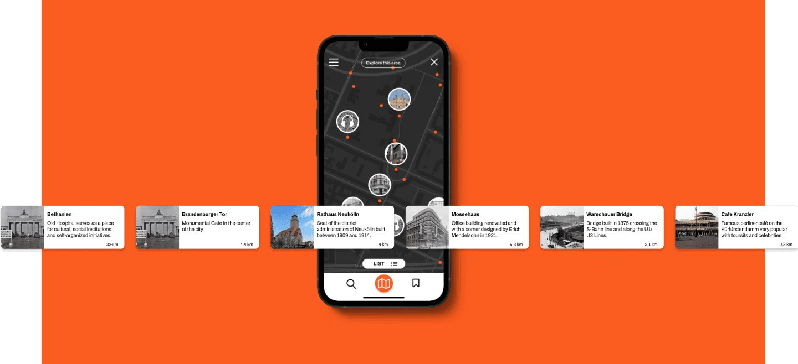
- Type
- Concept Project
- Category
- History Learning App
- Timeframe
- 2 Months
- Tools
- Figma, Photoshop, Illustrator
Overview
The Brief and Idea
The brief for this project was about working in an app with geo-located content.
The idea for this project came after visiting the Archive of the State of Berlin, discovering thousands of historical pictures of every street in the city, chronologically and alphabetically organised, but not easily accessible to the public.
At the same time, cities, especially Berlin, are complex, layered history is often difficult to discern in its urban fabric.
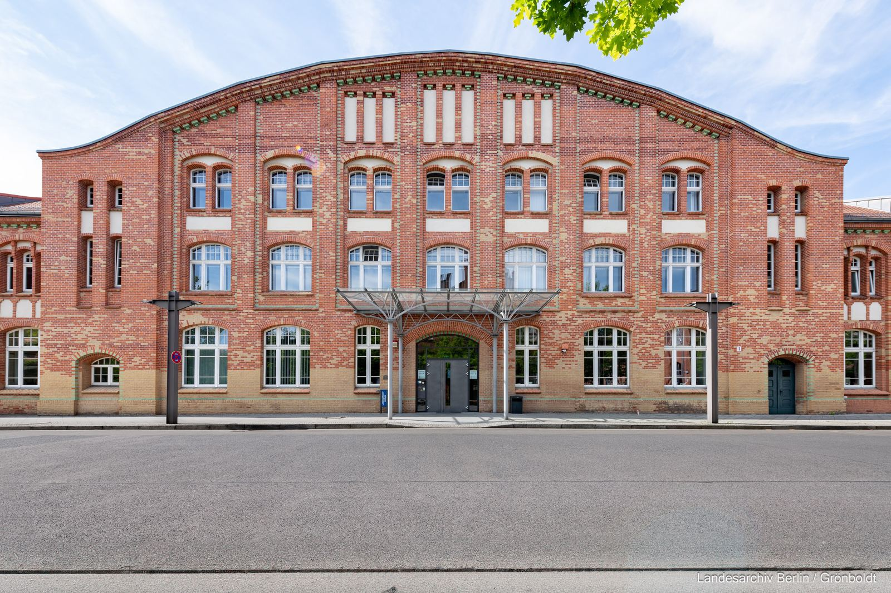
Problem
What are the challenges in accessing historical information?
1
Online information is often overwhelming or too vague.
2
It's hard to know where to start when researching unfamiliar sites.
3
Museums and archives can be intimidating, and many people aren’t aware of their resources.
4
Tourist guides are plentiful but lack accessible, detailed historical content.
Objectives
Connecting User Learning Needs with Cultural Institutions' Educational Goals
- 1
Use geolocation to make Berlin's historical imagery easily accessible.
- 2
Curate and present archival material in a user-friendly format.
- 3
Serve as a platform for digitising historical content.
- 4
Act as a bridge between cultural institutions and the public.
- 5
Be the go-to starting point for anyone curious about the history of their surroundings.
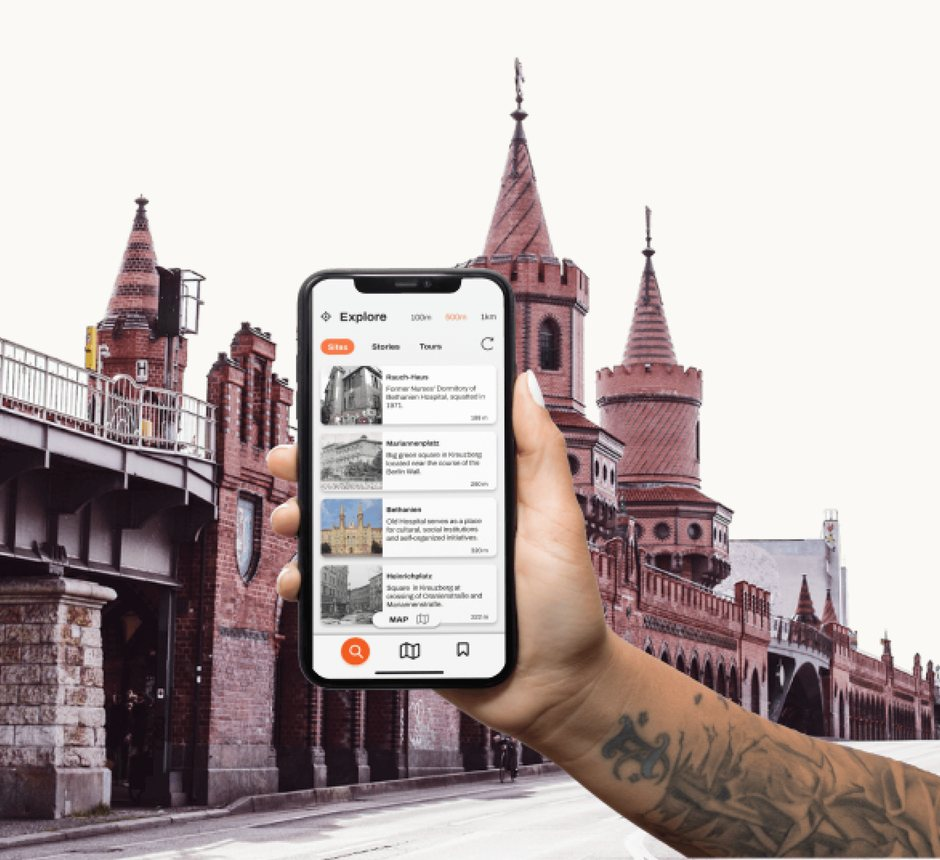
Research & Insights
An approach with 3 main discovery pillars
Curiosity
What sparks and satiates the curiosity around urban history?
Frustrations
At which point does frustration surpasses the curiosity?
Resources
What are the go to tools for learning and what is missing?
Direct Interviews
What? Ways of learning about the history of a place
Who? 10 Curious Berliners and Researchers/Students
How to reach them? Social Media, University Ad
“I didn’t even know what I had to search for”
“Sometimes there is too little information, or too much! Or not in the right place.”
“I appreciate when long texts are avoided or there is an audio option.”
Research Results
Patterns
Users rely on Google/Wikipedia first.
Online info is often either too sparse or overwhelming.
Users prefer control over how much they learn.
Audio tours offer flexible, in-situ learning.
Location-specific info is hard to find.
Pain Points
Online information is either too much or too little.
Users struggle with where to start their research.
Information on outer neighbourhood sites is lacking.
Surprising Findings
Trustworthy sources are valued; tourist guides are avoided.
Users want a single reference point for curiosities.
Information should be in small, manageable chunks.
Users prefer spending 2-5 minutes on topics of interest.
Goals Mentioned
Connect hard facts with narratives or specific themes.
Use audio for those who struggle with small screens.
Break down long information into smaller chunks.
Include both fun and factual content for each site.
Defining Requirements
David, 33
Goals: Access quick, reliable information while on the go, and save favorite locations for future reference.
Frustrations: Confusing apps and contradictory information slow him down.
"Berlin’s architecture fascinates me, but I often don’t know where to find information beyond the usual highlights like the Wall or WWII. I wish there was a resource to help me understand what I’m seeing."
Eva, 44
Goals: Explore new places and teach her children about history through engaging, narrative-driven content.
Frustrations: Overcomplicated interfaces and too much information at once.
"Narratives help me make sense of the world, both in how I learn and work, especially when I'm with my kids. I value trustworthy sources that provide curated information, allowing me to build a story in my mind.”
User Stories
Requirements NEED
Requirements WANT
As a local Berliner, I want to know what specific sites in my surroundings are.
Create map with geolocations to be able to explore
Include GPS location to personalise view
As a local Berliner, I want to learn more about specific topics that interest me.
Associate stories with specific sites.
Create a list of the stories available.
As a busy user on the go, I want to have the main facts first and decide what I want to know more about.
Organise content to show quick facts first.
As a user, I want to filter out material according to theme/time period.
Categorize content according to themes and/or time period.
Introduce filter options in lists and on the map.
As a curious user, I want to be able to search for a specific address to see if there is a picture available.
Add versatile search function.
As a returning user, I would like to access my bookmarked places and share them.
Formal referencing of all material, to protect property rights.
Add more links for further reading
As a curious user, I would like to be notified when I am close to a place that might interest me.
Send notification when a point of interest is near
Start game mode to find the right spot
AR images to several locations
Collect interest of users in database
Geolocation of user if allowed
Design Goals
A powerful yet simple platform that makes exploring history engaging and accessible.
The goal is to create a platform that would serve both historical institutions achieve their educational goals, and make learning history more accessible:
Digital Catalogue
It will function as an expanding geo-located digital catalogue for historical imagery that are in process of digitisation.
Narrative-Driven
With curated content from trusted institutions, it will offer users a narrative-driven experience.
Progressive Disclosure
The design focuses on progressive disclosure, making historical information less intimidating and more engaging.
On-the-go Knowledge
Users can connect their real-world experiences with the city’s historical layers, learning as they explore.
MVP & User Flows
Making Extensive Data Accessible and Easy to Navigate
Based on research insights and goals, I chose 4 standardised formats to present information, ensuring history is easy and accessible to access:
- Sites
Curated by partner institutions, stories offer bite-sized narratives tied to specific locations, making history digestible and engaging.
- Stories
- Audio Tours
- Augmented Reality
Diagram of User Flows
By integrating user flows from the stories, I designed a navigation system that handles extensive content. The Home screen is centered on a versatile map-based search, allowing results to be viewed as a list or on the map, with easy access to bookmarked content.
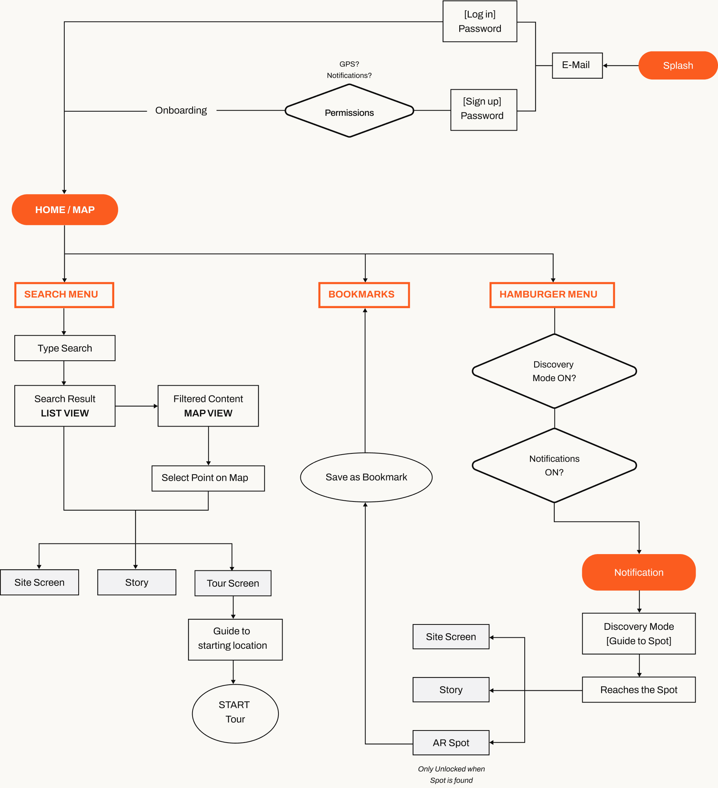
Usability Testing
Assessing first-time users' ability to navigate and easily access content
I aimed to see if users could easily navigate the app and find content, testing key functionalities to identify any pain points or areas of confusion:
Scenario
You are walking around a new part the city where you’ve never been before and find an interesting monument but have no idea what it is.
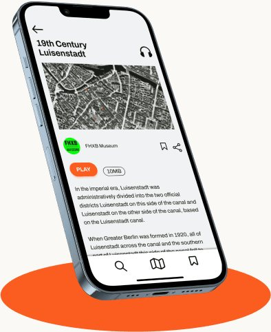
How would you find the content to inform yourself about its history?
How would you find the content about one of your favourite places in the city?
Find the content that you have bookmarked as favourite and share it with a friend that might find it interesting.
Problem
Participants tried to center the map on their GPS location to start understanding the content.
Participants confused the Near You menu for the Location button, and didn’t consider to obtain their goals.
Solution
Add Location icon near the map navigation. Mark the position on the map and the direction that the phone is pointing.
Include List/Map of nearby content in the Search menu before typing, making the Near You menu redundant.
Problem
Participants wanted to filter their search by distance and/or location on the map.
All participants couldn’t figure out the stories listed without labels.
Solution
Include List/Map view options in search results. Filter feature reserved for the search results.
Add label and information when listing stories to attract interest.
Problem
Participants valued the Bookmarks feature but found it not very prominent.
Solution
Move up Bookmarks one navigation level to go directly on the navigation bar.
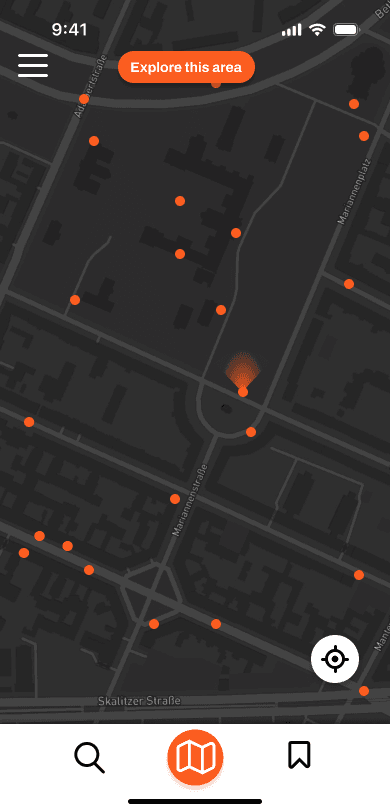
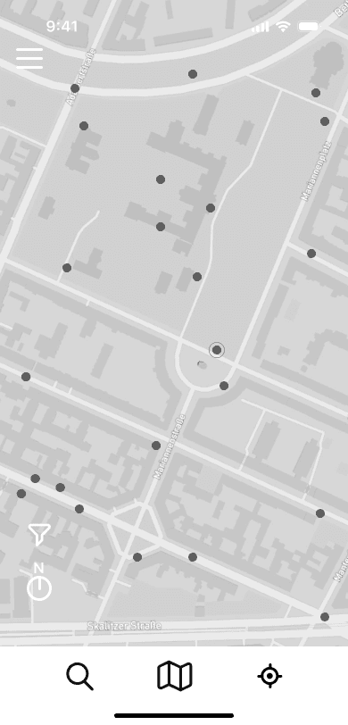
Location Icon
To center map, the Location Icon is added. Previously being used as Near You, that now migrates to Search screen. The perspective direction has been added, as well as a "Explore Area" function.
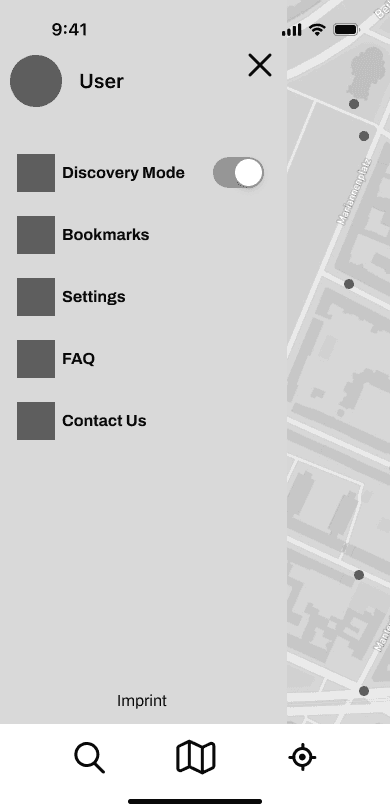
Bookmarks
Saved locations goes from Hamburger side menu to main Navigation Bar.
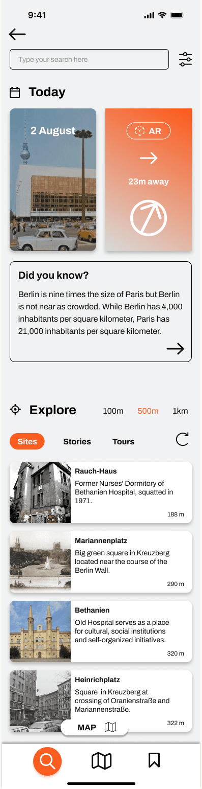
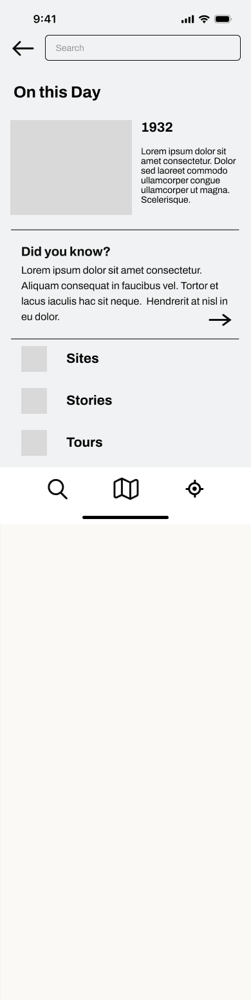
List/Map Near You
Near You list migrates to the search screen, and direct link to their location on the Map is added.
Filtering and Distances
The filtering is reserved for search results. The user can filter by type of content or distance to live location.
UI Style Guide
A Berlin-inspired, bold, clear, and content-friendly design system
The design system was inspired by Berlin's urban landscape. Bold, clear visuals with a touch of orange echo the city’s recognisable elements, ensuring the app remains visually appealing while accommodating large amounts of content.
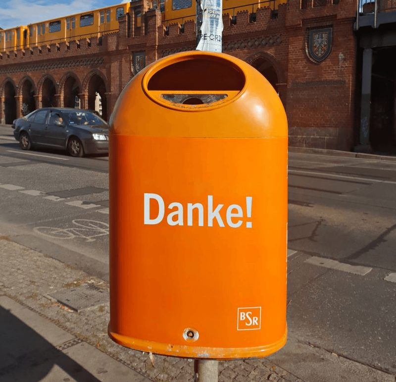
Color palette: accent #FB5C1F, background #F1F2F3, typography #0D0D0D, white #FFFFFF.
Typography: Archivo. Title 31 pt bold, H1 25 pt bold, H2 20 pt bold, H3 16 pt bold, body 16 pt regular at 150%, label 1 14 pt bold, label 2 14 pt regular, secondary text 12 pt regular at 120%.
Map styling: The map is monochrome and dark to contrast with other UI elements, serving as the base. Geolocated content is marked in the brand color with surfaces at 50% opacity. Buildings #232323, background #2D2B2C, streets #797979, accent #FB5C1F at 50%.
Imagery: Historical images should be mostly black and white with consistent grey tones. Use perspectives with long vanishing points for striking effects, and ensure colors are saturated and well-contrasted.
Final Design
Integrating learnings to create a proposal to be validated
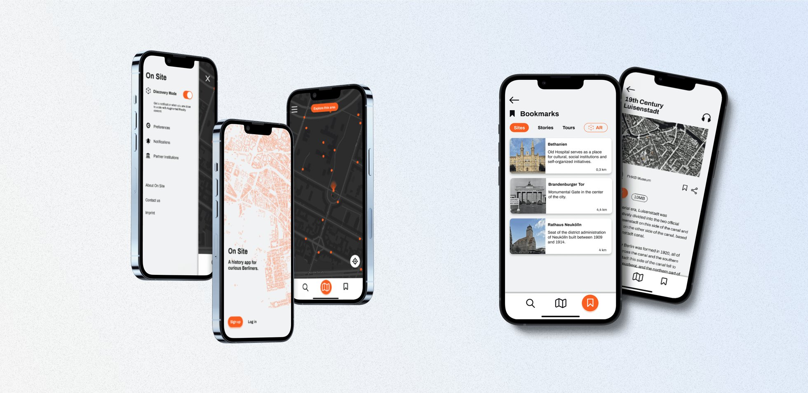
Retrospective
A first step towards accessible history learning
Throughout the project, I found inspiration in refining my initial idea, revealing the potential of making currently inaccessible historical images available. My goal was to present history in a more approachable and engaging way, with great potential for collaboration with educational institutions.
Juggling the task of making a conventionally "tedious" subject enjoyable, practical, and captivating, examinations and discussions revealed varied educational inclinations. The outcome is an encouraging initial version that resonates with both history aficionados and laypeople. Further rounds of testing will be needed to finalize and refine the numerous functionalities, as is typical in ambitious ventures like this one.
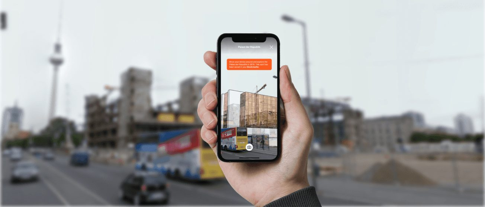